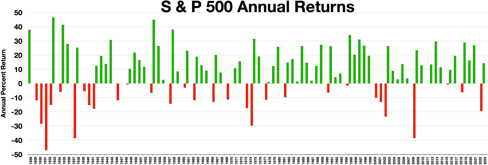
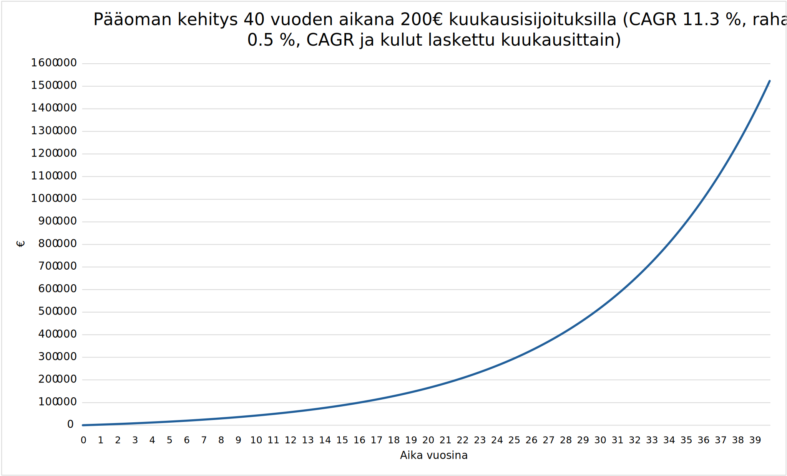

Indeksisijoittaminen
 Juho Thusberg
Juho Thusberg
8. tammikuuta 2026
Minulta on aina silloin tällöin kyselty, mistä kannattaisi lähteä aloittelijana liikkelle sijoittamiseen liittyvän mielenkiinnon alettua.
Niinpä päätin tehdä pienen pintaraapaisun vuosien saatossa oppimastani ja tänään aiheeksi valikoituikin indeksisijoittaminen.
Indeksisijoittaminen on usein se lähtökohta, josta sijoittamisesta kiinnostuneet aloittelijat lähtevät liikkeelle – ja ihan hyvästä syystä.
Tässä jutussa käsitellään indeksisijoittamisen liittyvää yleistietoa, tuotto-odotuksia, kuluja ja muuta sisältöä, mikä olisi hyvä tietää ennen ensimmäisiä sijoituksia.
Warren Buffett on yksi maailman kuuluisimmista arvosijoittajista ja hän on korostanut, että suurin osa ihmisistä tulisi hyvin toimeen sijoittamalla vain sellaiseen osakerahastoon, joka seuraa S&P500-indeksiä.
Buffett oli toisen maailmankuullun sijoittajan Benjamin Grahamin oppilas, jota on pidetty arvosijoittamisen tärkeimpänä esihahmona.
Mutta mitä nämä edellä mainitut asiat, kuten osake ja indeksi – oikein käytännössä tarkoittavat?
Mitä ovat osake, indeksi ja indeksirahasto?
Osakkeella tarkoitetaan yhden kappaleen omistusta yhtiön liikkeelle laskemista osakkeista.
Mikäli ostaa sellaisen yhtiön osakkeita 10 kpl, jolla on liikkeelle laskettuja osakkeita yhteensä 100 kpl, on oikeus 10 % yhtiön tulevista tuotoista.
Mitä enemmän omistaa osakkeita yhtiöstä, sitä enemmän on äänestysvaltaa osakkeenomistajia koskevissa asioissa.
Todellisuudessa suuremmilla pörssiyhtiöillä on valtava määrä liikkeelle laskettuja osakkeita.
Näiden yhtiöiden mittakaavassa pienemmillä sijoitussummilla omistaa vain minimaalisen määrän yhtiön tuotoista ja äänestysvallasta.
Indeksillä tarkoitetaan jonkin seurattavan asian kehitystä ajan suhteen.
Keskitytään tässä jutussa osakeindekseihin, eli seurattavana asiana ovat osakkeet ja niiden hinnan kehitystä seurataan ajan suhteen.
Usein pelkällä “indeksi” ilmaisulla tarkoitetaankin nimenomaan osakeindeksiä sijoitusmaailamassa.
Erilaisia osakeindeksejä ovat mm. S&P500 ja OMXH25.
S&P500-indeksi seuraa 500:n yhdysvaltalaisen yhtiön kehitystä.
Kyseiseen indeksiin valikoidaan yhtiöt monin perustein, mutta niistä merkittävin on ehkäpä yhtiöltä vaadittu suuri markkina-arvo.
Markkina-arvo saadaa yksinkertaisesti kertomalla yhtiön osakkeiden lukumäärän osakkeen hinnalla.
Tällöin yhtiöt vaihtuvat indeksissä, eikä samat yhtiöt jotka ovat nyt siellä, ole siellä välttämättä enää 50 vuoden päästä.
Tällä hetkellä S&P500-osakeindeksiin sisältyy mm. Apple, Nike ja PayPal.
OMXH25 on muutoin samantyyppinen indeksi, mutta se seuraa 25:tä Helsingin pörssiin kuuluvaa yhtiötä.
Näitä ovat mm. Kone, Elisa ja Qt Group.
Indeksirahasto on rahastoyhtiön ja salkunhoitajan hallinnoima rahasto, joka pyrkii seuraamaan tiettyä osakeindeksiä (esim. S&P500).
Näissä rahastoissa on usein hyvin paljon samoja omistuksia, kuin mitä osakeindeksi sisältää.
Rahastoa ostaessa sijoitetaan tällöin välillisesti osakkeisiin tai muihin arvopapereihin.
Aritmeettinen- ja geometrinen keskiarvotuotto (CAGR)
Rahastojen tuottoja tarkastellessa usein ilmoitetaan prosentuaaliset muutokset tiettynä ajanhektenä. Usein saatetaan puhua keskiarvotuotosta ilman tarkempaa selventämistä laskumetodeista. Tarkastellaan, miten nämä keskiarvot vaikuttavat tuottoihin ja millaista arvoa voidaan hyödyntää vertailukelpoisena.
Esimerkki 1
Otetaan esimerkki, jossa sijoitetaan alkusummana 1000 € ja sitä pidetään sijoitusrahastossa 5 vuotta. Tälle rahasummalle saadaan vuosittain tuottoa alla olevan taulukon mukaisesti.
| Prosentuaalinen muutos vuodessa | Pääoma vuoden jälkeen (€) | Tuotto vuoden jälkeen (€) |
|---|---|---|
| 10 % | 1100 | 100 |
| -20 % | 880 | -220 |
| 5 % | 924 | 44 |
| 10 % | 1016.4 | 92.4 |
| 15 % | 1168.86 | 152.46 |
Euromääräinen keskiarvotuotto vuodessa aritmeettisesti laskettuna olisi tämän perusteella n. 33.8 € viiden vuoden ajalta.
Mikäli oletettaisiin, että samat prosentuaaliset muutokset tapahtuisivat myös seuraavana kymmenenä vuonna ja haluttaisiin tietää tämän jälkeen sijoitettu loppusumma, ei tätä keskiarvoa voitaisi käyttää siihen tarkoitukseen.
Aritmeettista keskiarvoa hyödyntäen yhtäsuureen lopputulemaan taulukon loppusumman kanssa päästään vain silloin, kun tarkastellaan viiden vuoden osakekehitystä.
Useimmiten tuottoa halutaan tarkastella prosentteina.
Prosentteja tarkastellessa pitää olla varovainen ja hyödyntää mielellään geometrista keskiarvoa aritmeettisen keskiarvon sijasta.
Tällöin voidaan hyödyntää prosenttilukemaa vertailukelpoisena.
Aritmeettisella keskiarvolla saataisiin vuosittaisista prosentuaalisista muutoksista laskettua keskiarvoksi:
Tätä neljän prosentin keskiarvoa ei voida kuitenkaan hyödyntää tarkastellessa mahdollisia tulevaisuuden tuottoja. Katsotaan, mitä tulisi loppusummaksi, mikäli tätä lukua käytettäisiin. Eli 1000 € sijoitus nousisi vuodessa 4 % 5 vuoden ajan. Tämä voidaan laskea:
Tai toisin sanoen:
Tämä on eri arvo, kuin mitä tulokseksi haluttaisiin vertailukelpoisuuden merkeissä. Loppusummanhan pitäisi olla taulukon mukaan 1168.86 €. Tämän takia muutos täytyy laskea geometrisena keskiarvona. Geometriselle keskiarvolle on olemassa sijoitustuottokaava (CAGR):
, jossa t on vuosittaisten aikajaksojen lukumäärä
, CAGR on geometrinen keskiarvotuotto per vuosi
Esimerkissä 1000 € on alkupääoma, loppupääoma on 1168.86 € ja vuoden mittaisia aikajaksoja on 5 kpl.
Täten saadaan CAGR-tuotoksi n. 3.2 % per vuosi käyttäen kaavaa 1.
Tätä CAGR-lukemaa voidaan käyttää hyödyksi aiemmin päätellylle kaavalle:
Tällöin loppusumma saadaan siihen lukemaan, mihinkä se johtaisi samojen prosentuaalisten vuosimuunnosten tapahtuessa uudestaan ja uudestaan. Todellisuudessa katsomme nämä muutokset oikeasta datasta pitkältä aikaväliltä. Seuraavaksi kysymykseksi saattaa muodostua, että mitä nämä CAGR-tuotot ovat olleet aiemmin mainituille osakeindekseille historian saatossa ja voitasiinko näillä lukemilla arvioida indeksirahaston tuotto-odotuksia?
Minkälaista tuottoa voi odottaa indeksirahastolta?
Sijotuskeskustelussa usein kuulee, että mennyt tuotto ei ole tae tulevasta tuotosta – mikä onkin pääosin totta. Osakepoiminnassa voikin tehdä päätöksiä osakeanalyysin avulla kvartaalidatasta, eikä osakkeen historiallisen kurssikehityksen perusteella. Osakeindeksejä tarkastellessa tämä kävisikin jo monimutkaisemmaksi ja voisi argumentoida, että osakeindeksien kohdalla ei ole kehitetty parempaa ennustetta tuleville tuotoille, kuin tarkastella aikaisempia tuottoja. Aiemmin mainittiin, että osakeindeindeksissä yhtiöt usein vaihtuvat kriteerien perusteilla. S&P500-indeksin kriteerejä ovat mm. suuri markkina-arvo ja se, että viimeisimmän kvartaalin tulos on pitänyt olla positiivinen. Tällöin indeksistä lähtee pois sellaiset yhtiöt, jotka eivät enää pärjää niin hyvin. Tällöin on vaikea tehdä analyysia, kun itse indeksi korjaa jo yhtiöitä pois sieltä.

Kuvaajasta 1 huomataan, että indeksin vuotuinen tuotto ei ole aina tasaista.
Ilmiöinä näkyvät mm. vuoden 1929 pörssiromahdus, 1990-luvun puolivälistä alkanut IT-kuplan syntyminen ja sen puhkeaminen 2000-luvun aluassa, sekä 2022 Ukrainan sodan ja keskuspankkien korkojen kiristämisestä johtuva laskuvuosi.
Tästä voi päätellä, että ajallinen hajauttaminen voi olla myös järkevää rahastoa ostaessa, esimerkiksi sijoittamalla palkasta joka kuukausi.
Yhden könttäsumman sijoittaessa, voi (historiallisesti) huonon tuurin käydessä joutua odottamaan vuosia ennen takaisinpääsyä alkuperäiseen sijoituspääomaan.
Voidaanko siis ottaa historiallinen CAGR-tuotto S&P500-indeksistä ja laskea sillä haluttu lopputuotto alkupääomalle?
Melkein, mutta vielä tarkempi arvio saadaan, kun otetaan osingot huomioon indeksissä.
S&P500 ottaa nimittäin huomioon ainoastaan yhtiöiden osakekurssien kehityksen, eikä niiden jakamia osinkoja.
Yhtiö voi jakaa voittojaan sijoittajille osinkona tai uudelleensijoittaa voitot liiketoimintaan.
Useimmat indeksirahastot uudelleensijoittavat saadut osingot, eivätkä jaa niitä rahasto-osuuksien omistajille (accumulating, acc.).
Tästä syystä S&P500-indeksiä seuraava rahasto usein tuottaa enemmän kuin itse indeksi; uudelleensijoitetut osingot näkyvät kurssin kehityksessä.
Indeksirahastoilla on myös erilaisia kuluja ja yksi tärkeimmistä asioista rahaston valitsemisessa on valita mahdollisimman matalakuluinen sellainen.
Muutoin kulut syövät tuottoa.
Kaikki yli 1 % vuosittaista kokonaiskulua pääomasta veloittavat indeksirahastot ovat kalliita.
Itse valitsen rahastot, joilla kulut pysyvät alle 0.5 %.
Hajautustaktiikoita on useampia aiemmin mainitun ajallisen hajauttamisen lisäksi.
Indeksirahasto jo itsessään hajauttaa moneen eri yritykseen ja toimialaan (usein, riippuen indeksistä).
Tätä voidaan pitää toisena hajauttamisen keinona. Kolmantena keinona voidaan pitää maantieteellistä hajauttamista.
Kriisit eivät aina tapahdu maailmanlaajuisesti, jolloin voi olla järkevää sijoittaa esimerkiksi yhdysvaltalaisia, suomalaisia ja eurooppalaisia indeksejä seuraaviin rahastoihin.
Esimerkki 2
Esimerkkinä voidaan koota historialliset CAGR-tuotot yhdysvaltalaisista ja suomalaisista indekseistä. OMXHGI-indeksi on Helsingin pörssin yhtiöistä koostuva osinkokorjattu indeksi. Aloituspäivämäärä indeksille oli 28. joulukuuta 1990 ja sen pistelukema oli tuolloin 1000. Joulukuun 31. päivä vuonna 2025 indeksin pistelukema on 41 633.79. Tästä saadaan laskettua kaavalla 1 CAGR-tuotoksi n. 11.24 %. Lasketaan Yhdysvaltojen indeksille tuotto samoin keinoin:
| Indeksi | Aloituspisteet (pvm) | Lopetuspisteet (pvm) | CAGR | Tyyppi | Datan lähde |
|---|---|---|---|---|---|
| OMXHGI | 1000 (28.12.1990) | 41 633.79 (30.12.2025) | 11.24 % | Osinkokorjattu osakeindeksi (Suomi) | lähde |
| S&P500TR | 256.02 (4.1.1988) | 15 353.16 (29.12.2025) | 11.37 % | Osinkokorjattu osakeindeksi (Yhdysvallat) | lähde |
Oletetaan aloitussijoitukseksi 10 000 €, joista molempiin indekseihin sijoitetaan 5000 €. Pidetään sijoitettua summaa 30 vuotta rahastoissa. Loppupääoman kaavalla (kaava 2) voidaan laskea kummallekin indeksille saatu loppupääoma ja yhdistää nämä. Loppuarvoksi saadaan n. 248 602 €.
Mitä pitää ottaa lopuksi huomioon?
Osinkokorjatuista indekseistä ei löydy dataa aikaisemmilta ajoilta historiasta, joten suuri osa pörssien perustamisajankohdan jälkeisistä vuosista jää huomiotta.
Tämä voi hieman vähentää sijoitustuottojen tarkkuutta, mikäli halutaan käyttää historiaa tulevan arvioinnissa.
Toisaalta toisesta näkökulmasta voisi ajatella, että lähempien vuosien tuotot voivat kuvata paremmin tulevien tuottojen kehitystä, kun osakeindekseissä olevien yhtiöiden toimialat ovat myös muuttuneet modernimpaan suuntaan.
Esimerkin 2 laskut on tehty ennen verotusta.
Pääomavero on suomessa 34 % myyntivoitoista yli 30 000 € voitoille ja 30 % myyntivoitoista alle 30 000 € voitoille.
Mikäli verotus otetaan CAGR-tuotossa lopuksi huomioon, laskee se tuottoa huomattavasti.
Esimerkissä 2 ei ole myöskään otettu huomioon rahaston kuluja, jolloin tuotto on todellisuudessa pienempi.
Nämä voidaan ottaa huomioon seuraavassa reaalimailman esimerkissä.
Esimerkki 3
Sijoitetaan palkkatuloista aina 200 € kuukaudessa. Olkoon sijoitetun pääoman vuosittainen CAGR-tuotto 11.3 % ja rahastokulut 0.5 %. Käyttäen Exceliä hyväksi, saadaan seuraavanlainen käyrä, jossa on otettu rahastokulut huomioon:
Kuvaajasta 2 huomataan, että esimerkiksi miljoonan loppupääomaan päädyttäisiin n. 36 vuoden jälkeen. Tämän jälkeen voitosta pitää maksaa vielä 34 % veroja. Voittoa on lopullinen pääoma miinustettuna kuukausittaiset palkkasijoitukset. Tällä aikavälillä palkasta sijoitettu kokonaismäärä on ollut 86 400 €. Lopullinen nettotuotto olisi:

Lopuksi vielä mainitaan, että indeksi on mahdollista voittaa omalla osakepoiminnalla. Esimerkiksi 15 % CAGR lisäisi tuottoa huomattavasti pitkällä aikavälillä verrattuna perinteisten osakeindeksin tuottoon. Tämä jääkööt myöhempiin pohdintoihin ja aloittelevalle sijoittajalle indeksisijoittaminen onkin varsin pätevä vaihtoehto.
Yhteenveto
• Valitse matalakuluiset rahastot
• Muista hajautus
• Vain 200 euron kuukausisijoituksella on ollut historiallisesti mahdollisuus netota miljonääriksi n. 40 vuoden aikajaksolla
Tämä ei ole sijoitussuositus. Sijoittamalla on mahdollisuus menettää sijoitettu pääoma osittain tai kokonaan.